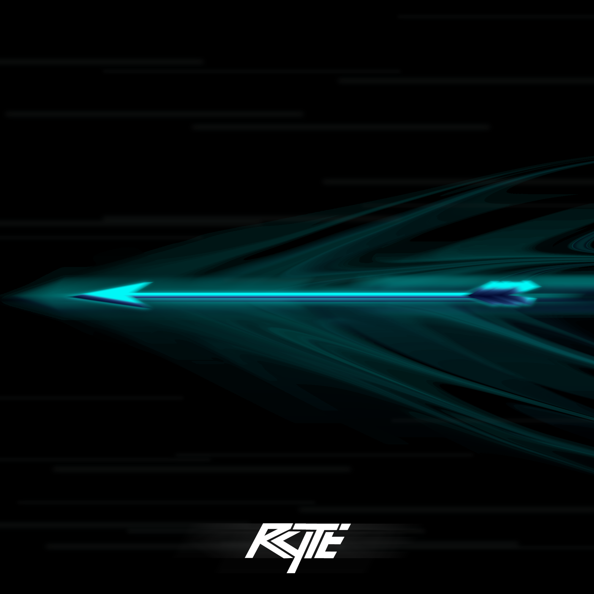
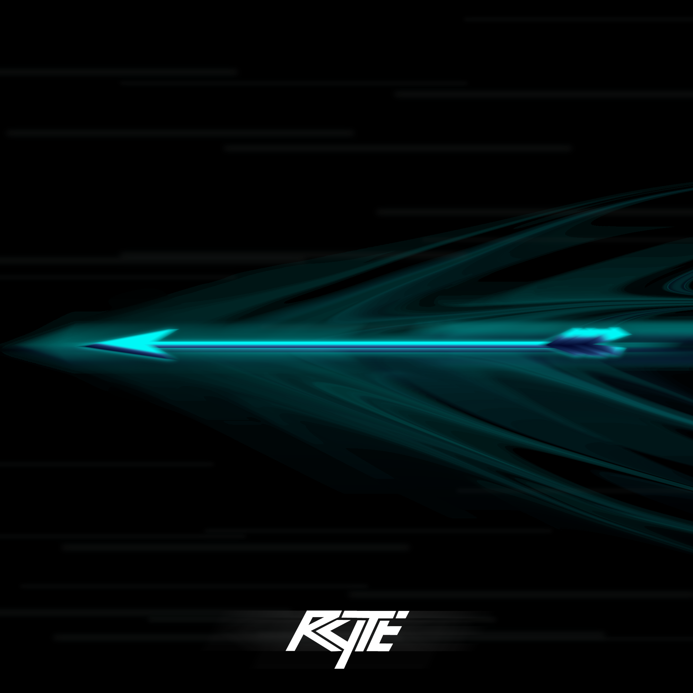

jopetrakian@gmail.com
Download Résumé PDFDuring the summer of 2023, prior to beginning the Master of Entertainment Arts, Engineering Track, at the University of Utah, I developed two 2D games in order to gain some experience in the field of video game development. I developed these games using the PyGame modules for Python. I spent a couple weeks developing Asteroid Destroyer to understand how to use the modules, then spent the remainder of the summer developing Desert Rider.
For our first project in the Rapid Prototyping course, I worked in a team of four people to develop a 2D Unity Game, “Furious George”, for which my role was engineering. I developed the core gameplay elements for our game using Unity and C#.
For our second project in the Rapid Prototyping course, I worked in a team of five people to develop a 3D Unity Game, “Overdose Offensive”, which is meant to be a serious game with the goal of informing players about certain aspects of drug misuse. As the engineer for this project, I developed the core gameplay elements using Unity and C#.
For this project, our team was given an action, stacking, for which we each had to individually develop a mechanic that would be included in our team gym. The mechanic I decided to go with is stacking crates using a forklift.
For our final project, I collaborated with a team of 10 students in developing a 3D top-down shooter using Unreal Engine 5. My primary responsibility was integrating a system enabling our game to connect to live Twitch streams, allowing viewers to vote periodically on in-game events. Additionally, I designed the UI for the voting system and implemented movement and shooting mechanics for the player-controlled submarine.
This is a project that I did for the Graphics course offered at my school. This project's theme is Grand Theft Auto, my favorite video game. The game revolves around planning and engaging in heists and one of my favorite aspects of this game is the cars that you can buy and customize with money obtained from heists. Thus, I decided to add in a loop in which a car escapes after a bank heist and is chased by two police cars. This project includes various techniques that I learned throughout the semester, such as the dynamic environment map used for the reflection of the sculpture in the middle of the town or the various types of movements included in the town. I also included techniques that I discovered on my own, such as the drift smoke from the car which is in fact randomly placed spheres with varying color and opacity. To interact with this project, please click the link below.
In the Deep Learning for Computer Vision course, my teammate and I developed a Fully-Convolutional One-Stage Object Detection framework to identify and locate a set of objects in an image. For this project, we used the PASCAL VOC 2007 dataset where each image is annotated with a set of bounding boxes, where each box gives the category label and spatial extent of some object in the image.
This is a project that I did for the Artificial Intelligence course offered at my school. The goal of the project was to develop an AI game player for a modified version of the game called Teeko using the Minimax algorithm. My AI player is able to follow the rules of this modified Teeko game, select a move in less than 5 seconds, and is capable of beating a random player in at least 2 out of 3 matches. Additionally, this AI player can play against a real player as can be seen above.
During my participation in a Software Development course, I collaborated with a team of six individuals over the course of a semester to create software tailored for museums called Museo. Our objective was to integrate QR codes alongside art pieces, allowing museum visitors to scan these codes for instant access to a webpage containing pertinent details about the artwork, accompanied by an audio description. Additionally, users had the convenience of saving their preferred art pieces to their profiles for future reference. While my primary responsibility in the development phase was to craft a user-friendly QR code generator interface for museum curators, it's worth noting that I actively engaged with my team to architect and execute this project using Agile and Scrum methodologies for project management.
For this project, I collaborated with team members to develop a website that logs and displays stock trades. My role for the project was being the test engineer, so I was in charge of testing the various code used for this project as well as presenting our work. This was an especially interesting project as we each had a distinct role and worked with one another to ensure that all of programs worked well together.


 
